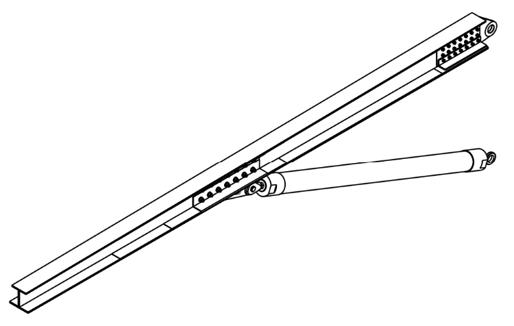
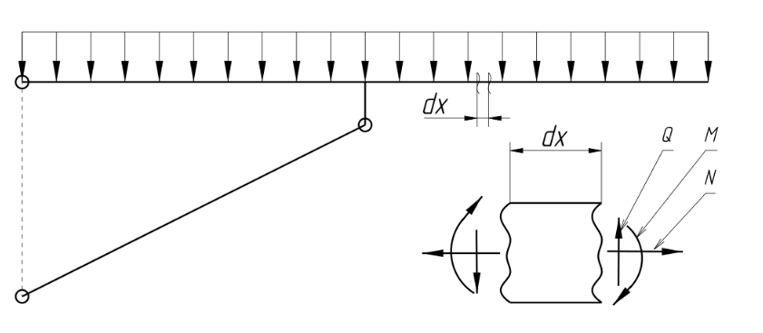
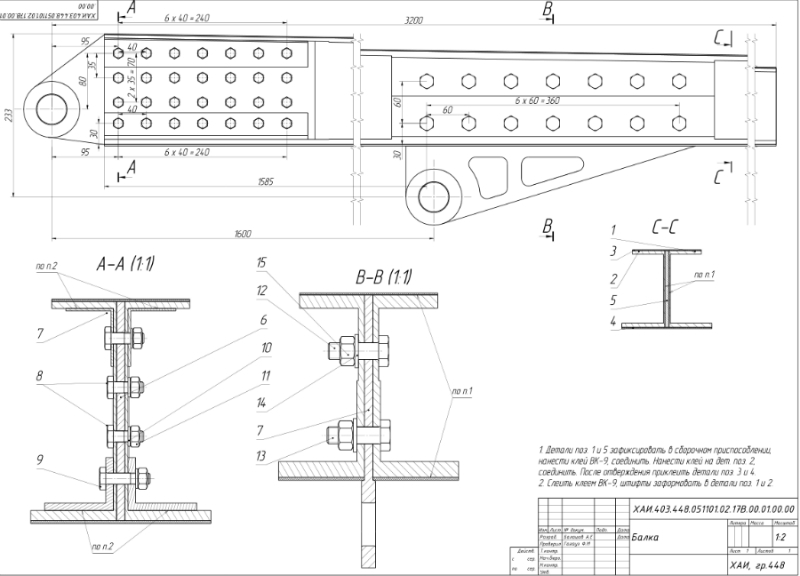
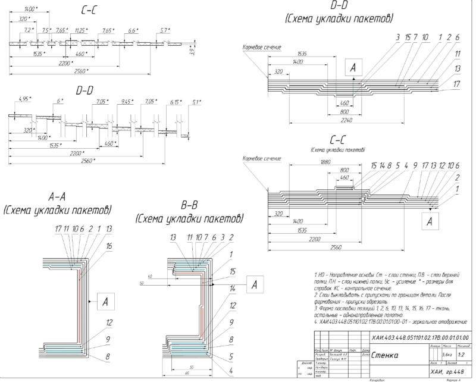
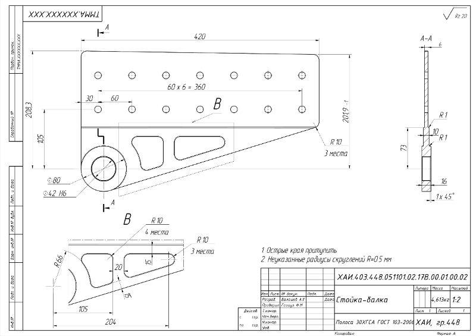
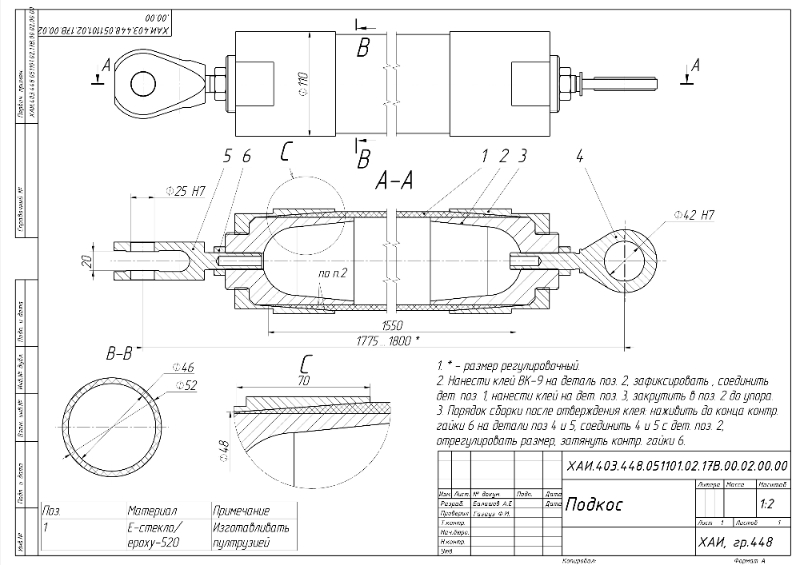

The beam with strut
Design composite carbon beam with fiber-glass strut and articulator connectors.

- Исходные данные
- Выбор профиля балки
- Определение проектных нагрузок
- Эпюры внутренних силовых факторов
- Конструкторская документация
- МКЭ
- Заключение
Исходные данные
Beam has been designed to bearable irregularly distributed load from 75 kN at the assembly unit to -60 kN at the end.

| Part | Type | Material |
|---|---|---|
| Shelfs | Carbon fiber | IM6, 65% |
| Side | Carbon cloth | 6GfH, 58% |
| Srtut | Fibrf-glass | E-glass, 60% |
.
Выбор профиля балки
В данной работе балка изготавливается в виде двутавра. Такой профиль обеспечивает достаточно свободный доступ к узлам крепления, крепежным элементам, а также прост в изготовлении. Кроме того, в симметричном относительно плоскости действия нагрузки профиле отсутствует необходимость в нахождении центра изгиба.

Определение проектных нагрузок
Согласно расчетной схеме бруса в каждом сечении балки действуют обобщенные силовые факторы – перерезывающая (поперечная) сила, изгибающий момент и осевая сила.

Эпюры внутренних силовых факторов
После расчета (ВСФ) необходимо построить эпюры распределения их по длине балки. Это необходимо для того, чтобы наблюдать характер их распределения. Ниже приведены эпюры – распределения ВСФ вдоль длинны балки.


Конструкторская документация
There how is looking only beam with assembly units: 
Composite laying scheme of beam looks like: 

Strut was made by spooling fiber-glass and gluing assembly units. 
МКЭ
Attachment fitting wich connect beam with strut made from 30ChGSA Steel and with using Topology optimization.

Технология изготовления балки
Изготавливается полуформа двутавра методом выкладки. На негативную оснастку укладывается слои стенки, обеспечивающие ее устойчивость, осле чего укладывается часть слоев стенки, обеспечивающих ее прочность, потом чередуя выкладываются слои полки, композитного усиления и оставшееся слои стенки. Необходимо обеспечить, чтобы слои стенки закрывали слои полки и усиления со всех сторон. Технологические накладки изготавливаются из 3 групп слоев. Внутренняя - группа слоев из того же материала, что и материал стенки, после чего часть слоев полки. Третья группа - слои, которые защищают однонаправленное волокно стенки от механических повреждений и расшелушевания. Изготовленные и отформованные части полуформы склеиваются в сборочном приспособлении с сотовым заполнителем, в это же время позиционируется стойка-балка и узел навески, после чего к ним клеятся технологические накладки. После отверждения просверливаются отверстия под КЭ, устанавливаются металлические вкладыши-усилители и устанавливаются КЭ.
Заключение
- Вес полок -5 805 г
- Толщина стенки – 3.6 мм
- Вес стенки – 2 438 г
- Вес технологических накладок – 3 375 г
- Вес - металлических деталей – 11.242
- Вес вкладышей – 3.54
- Вес всей балки с учетов веса КЭ – 39 070 г
Параметры подкоса:
- Длинна стержня – 1570 мм
- Средний радиус стержня – 49 мм
- Толщина стенки стержня – 6 мм
- Вес композитной части стержня – 6 863 г
- Вес переходников – 3 882 г
- Вес всего подкоса – 10 745 г